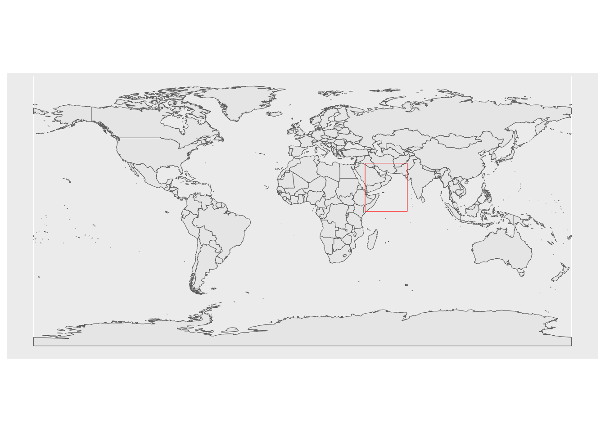

suppressPackageStartupMessages({
library(maxnet)
library(dplyr)
library(maxnet)
library(sf)
library(stars)
library(geodata)
library(dismo)
library(lubridate)
library(sdmpredictors)
})Marine Species Distribution Models
Maxent example
This example steps through the process of presence-only modeling using the maxnet package. The example is based on the notes by Ben Tupper (Biglow Lab, Maine) https://github.com/BigelowLab/maxnet/wiki/stars
Workflow
- Define the area of interest
- Obtain sea turtle occurrences for the NE coast of Africa
- Use the sdmpredictors package to assemble predictor variable data
- Collect background points within the region occupied by the presence points using sf package
- Model and predict using the maxnet package
Load necessary packages
Step 1: Define the region of interest
We are looking at the western Arabian Sea, Persian Gulf, Gulf of Oman, Gulf of Aden and Red Sea.
library(sf)
lats <- c(-0.125, 32.125); lons <- c(41.875, 70.125)
# raster extent is defined by west lon, east lon, south lat, north lat
ext <- raster::extent(lons[1], lons[2], lats[1], lats[2])
extent_polygon <- as(ext, "SpatialPolygons") %>% st_as_sf()
# we need to assign a coordinate system; 4326 is the default for maps in sf
sf::st_crs(extent_polygon)<-4326Get a polygon of the world.
library("rnaturalearth")
library("rnaturalearthdata")
Attaching package: 'rnaturalearthdata'The following object is masked from 'package:rnaturalearth':
countries110world <- ne_countries(scale = "medium", returnclass = "sf")Make a map of our region with the polygon of interest. reference
library(ggplot2)
library(sf)
ggplot(data = world) +
geom_sf() +
geom_sf(data = extent_polygon, color = "red", fill=NA)
Step 2: Load the occurrence data
This was queried using the robis package.
spp <- c("Chelonia mydas", "Caretta caretta", "Eretmochelys imbricata", "Lepidochelys olivacea", "Natator depressus", "Dermochelys coriacea")
wkt_geometry <- extent_polygon$geometry %>% st_as_text()
df <- occurrence(spp, startdate = as.Date("2000-01-01"), geometry = wkt_geometry)spp <- "Chelonia mydas"
fil <- file.path(here::here(), "data", "raw-bio", "io-sea-turtles.csv")
occ <- read.csv(fil)
occ <- occ %>% subset(scientificName == spp)Look at the column names
library(tidyverse)── Attaching core tidyverse packages ──────────────────────── tidyverse 2.0.0 ──
✔ forcats 1.0.0 ✔ stringr 1.5.0
✔ purrr 1.0.1 ✔ tibble 3.1.8
✔ readr 2.1.4 ✔ tidyr 1.3.0
── Conflicts ────────────────────────────────────────── tidyverse_conflicts() ──
✖ tidyr::extract() masks raster::extract(), terra::extract()
✖ dplyr::filter() masks stats::filter()
✖ dplyr::lag() masks stats::lag()
✖ raster::select() masks dplyr::select()
ℹ Use the ]8;;http://conflicted.r-lib.org/conflicted package]8;; to force all conflicts to become errorscolnames(occ) [1] "occurrenceID" "scientificName"
[3] "dateIdentified" "eventDate"
[5] "decimalLatitude" "decimalLongitude"
[7] "coordinateUncertaintyInMeters" "individualCount"
[9] "lifeStage" "sex"
[11] "bathymetry" "shoredistance"
[13] "sst" "sss"
[15] "date" Make sure the turtle was at sea.
occ <- occ %>% subset(bathymetry > 0 &
shoredistance > 0 &
coordinateUncertaintyInMeters < 200)
dim(occ)[1] 7060 15Change the occurrence data into an sf object with a coordinate system. Add a date column with YYYY-MM-DD format.
occ$date <- as.Date(occ$eventDate)
occ.sf <- sf::st_as_sf(occ, coords = c("decimalLongitude", "decimalLatitude"), crs = 4326)Plot the occurrence data
library(ggplot2)
library("ggspatial")
library("sf")
theme_set(theme_bw())
world <- st_make_valid(world)
world_points <- st_centroid(world)Warning in st_centroid.sf(world): st_centroid assumes attributes are constant
over geometries of xworld_points <- cbind(world, st_coordinates(st_centroid(world$geometry)))
plt <- ggplot(data = world) +
geom_sf(fill= "antiquewhite") +
geom_point(data = occ, aes(x=decimalLongitude, y=decimalLatitude), color = "red", size=0.1) +
annotation_scale(location = "bl", width_hint = 0.5) +
annotation_north_arrow(location = "bl", which_north = "true",
pad_x = unit(0.15, "in"), pad_y = unit(0.25, "in"),
style = north_arrow_fancy_orienteering) +
coord_sf(xlim = lons, ylim = lats) +
theme(panel.grid.major = element_line(color = gray(.5), linetype = "dashed", size = 0.5), panel.background = element_rect(fill = "aliceblue"))Warning: The `size` argument of `element_line()` is deprecated as of ggplot2 3.4.0.
ℹ Please use the `linewidth` argument instead.sf_use_s2(FALSE)Spherical geometry (s2) switched offplt + geom_text(data = world_points, aes(x=X, y=Y, label=name),
color = "darkblue", size=2, check_overlap = TRUE) +
xlab("longitude") + ylab("latitude") +
ggtitle(spp, subtitle = "occurences since 2000")Scale on map varies by more than 10%, scale bar may be inaccurate